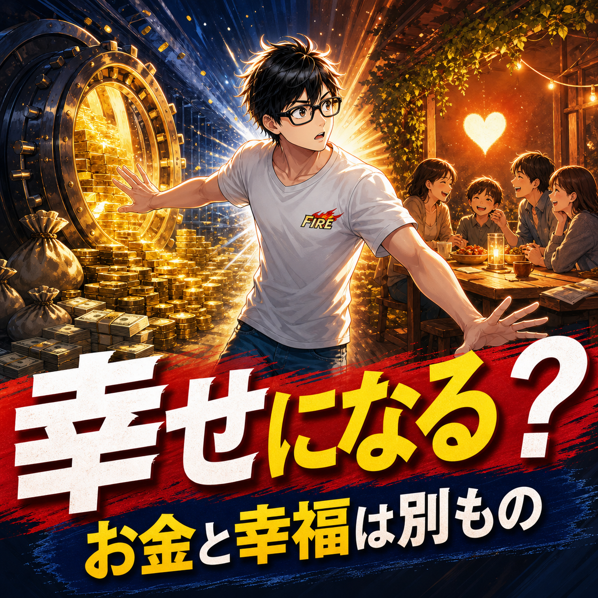

FIRE COLUMN
FIREすれば幸せになれる？お金と幸福のズレを経験者が語る

.png) RELATED ARTICLE
FIREを目指しても削らなかった支出。幸福度を守るために残したもの
FIREを目指すと、生活費を下げる話が中心になります。固定費を削る、保険を見直す、外食を減らす。どれも資産形成には役立ちます。
wakuwaku-fire-git.pages.dev ↗
RELATED ARTICLE
FIREを目指しても削らなかった支出。幸福度を守るために残したもの
FIREを目指すと、生活費を下げる話が中心になります。固定費を削る、保険を見直す、外食を減らす。どれも資産形成には役立ちます。
wakuwaku-fire-git.pages.dev ↗
 COMMUNITY
FIREを本音で話せる場所
ワクワクFIRE道。FIREや自由な人生を目指す人が交流できるコミュニティ。
community.camp-fire.jp ↗
COMMUNITY
FIREを本音で話せる場所
ワクワクFIRE道。FIREや自由な人生を目指す人が交流できるコミュニティ。
community.camp-fire.jp ↗
FIREすれば幸せになれるのか。資産を増やし、会社を離れ、自由な時間を手にしても悩みは残る。僕自身の資産の増減と、FIREした人たちの発信を読んで見えた幸福の形を重ねて考えます。
まいど！ワクワクFIREのまるです。
「FIREしたら、幸せになれますか？」
この質問、答えるのがけっこう難しいんよな。お金が増えれば、嫌な仕事から離れられる。時間も増える。そら、幸せになりそうに見えます。
僕も30歳で会社を辞めたころは、自由な時間が増えたら悩みはかなり減ると思っていました。ところが、時間が増えたら増えたで、今度は「この時間、何に使うんやろ」となる。ほんまに人生、残高だけでは決まらへんもんやな。
FIREは幸せの入り口にはなる
FIREには、幸せを感じやすくする力があります。朝の満員電車に乗らなくていい。体調が悪い日に無理して出勤しなくていい。家族との予定を、会社の都合だけで諦めなくていい。
これは小さなメリットに見えて、毎日積み重なると大きいです。自分で今日の時間を決められるだけで、呼吸がしやすくなる人もいると思います。
ただし、FIREは幸せそのものを自動で届けてくれる機械ではないです。玄関のドアを開けてくれるけど、その先を歩くのは自分。ここを勘違いすると、達成後に「思ってたんと違う」となります。
資産が増えても、不安が消えなかった
僕は資産が増えていく時期を経験しました。以前の振り返りでは、FIRE後に資産が1億4000万円以上まで増えた時期も書いています。数字だけ見れば、かなり安心できそうです。
でも、その後に大きく減った経験もした。資産が増えたときの喜びより、減ったときの痛みのほうが強く残る。昨日までの最高額と比べてしまうと、今あるお金まで「失ったもの」に見えてくるんよ。
お金があるのに不安。これは矛盾しているようで、けっこう普通の反応です。資産額を幸福のメーターにしてしまうと、相場が下がるたびに人生まで下がった気分になるからです。
僕がFIRE後に見落としていたもの
会社を辞める前は、自由時間を過大評価していました。ゲームをしたい、ゆっくりしたい、好きなことをしたい。実際、FIRE直後はゲーム中心の生活が長く続きました。
ゲームが悪いわけではありません。僕もゲームは好きです。ただ、毎日がそれだけになると、曜日も時間も薄くなっていく。誰かに必要とされている感覚や、昨日より少し前へ進んだ感覚がなくなると、自由が空白に変わることがある。
幸せを「嫌なことがない状態」だけで考えていたんやと思います。嫌なことが減ったあとに、何を大事にしたいのかまで考えていなかった。ここが、僕の見落としでした。
小さな幸せは、資産額に連動しない
最近の僕が幸せやなと感じるのは、平日のラーメン、散歩、子どもの朝食、家族との普通の時間、仲間との会話です。ものすごく地味やけど、こういう時間が一日を支えている。
資産が増えた日にしか幸せになれないなら、相場が動かない日はずっと待機画面です。そんな人生はしんどい。1000円の食事でも、誰と食べるかで満足は変わります。
節約も大切です。でも、削ることが目的になって家族との食事や健康、人と会う機会まで消してしまうと、残高は増えても幸福は減る。お金を使うかどうかではなく、使ったお金が何に変わったかを見るほうが、自分には合っていました。
FIREした人も、幸せと不安を同時に抱える
2026年8月、僕はFIREした人の発信を100人分ほど読み、幸せについて整理しました。幸福を判断できた83人のうち、70人はかなり満足、または概ね満足と読める内容でした。割合にすると約84％です。
ただ、これは僕が公開発信を読んで分類した整理で、無作為な学術調査ではありません。日本のFIREした人全体の幸福率と置き換えられる数字でもないです。
それでも見えたのは、満足している人にも暇や孤独、お金を使う不安があることでした。幸せな人は悩まない、ではない。幸せと不安は、同じ日に同居します。
幸福を金融資産だけに集中させない
資産が一つの柱になるのは自然です。でも、その柱だけで家全体を支えようとすると、相場の風で揺れたときに怖い。
友人、健康、居場所、趣味、経験、スキル、思い出、誰かに必要とされる感覚。これらも僕にとっては資産です。銀行口座には表示されへんけど、人生が下落したときに支えてくれる。
コミュニティを続けているのも、FIREを目指す人の情報交換だけが目的ではありません。会社を辞めても、誰かと笑ったり、悩みを話したりできる場所がある。その安心は、株価とは違う値動きをします。
幸せを増やすために、先に試す
FIRE後の幸せを考えるなら、退職日まで待たないほうがいいです。平日に家族と夕食を食べる。朝に散歩する。発信や小さな活動を試す。会いたい人に連絡する。
やってみて合わなければ、やめたらいい。FIREを達成したら急に理想の生活が出てくるわけではないので、今の暮らしで小さく実験しておくほうが、後で迷子になりにくいです。
「自由になったらやる」は、ほんまに先延ばしの言い換えになりやすい。自由になる前に、自由な時間を少し使ってみる。それだけで、自分が何に心が動くのかが見えます。
FIREは幸せを保証しない。でも選び直す力はくれる
FIREすれば幸せになれるか。僕の答えは、「幸せを感じる余白は増える。でも、幸せそのものは自分で育てる」です。
資産額だけを見ていると、増えたときも減ったときも心が持っていかれる。だから、家族との時間、仲間との会話、体調、遊び、何気ない一日にも価値を置くようになりました。
お金は大事です。ぶっちゃけ、お金があれば避けられる苦労もある。ただ、お金だけで人生の全項目に丸をつけることはできへん。FIREはゴールの旗ではなく、自分が何を幸せと呼ぶのかを、もう一度選び直すスタートラインなんやと思います。


.png)